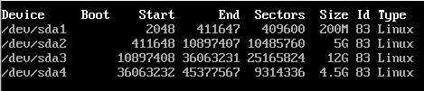

Pré-installation
Créer la clé d'insall (dd)
Check pour uefi / bios (si
ls /sys/firmware/efi/efivarsest non nul, verifier sur internet que c'est bon en bios, sinon bios de toute façon)Ping pour vérifier la co (
wifi-menupour le wifi)timedatectl set-ntp true
Partitions
lsblkfdisk /dev/sdXpour avoir un prompt fdiskDans le prompt fdisk,
ppour afficher le contenu du disque, tout supprimer avecd(undpar partition)Créer avec
n,primaryetfirst sectorpar défaut, une partition de boot de+200M, une partition de swap de 150% de la ram de la machine (prévoir upgrades potentiels), une partition de root pour installer des programmes de taille raisonnable genre 50go et une partition de home avec le reste du disque (juste appuyer sur entrée pour la taille).wpour écrire quand c'est sur que c'est bon

- Créer des filesystems sur boot, root et home :
mkfs.ext4 /dev/sdX1
mkfs.ext4 /dev/sdX3
mkfs.ext4 /dev/sdX4
- Swap :
mkswap /dev/sdX2
swapon /dev/sdX2
- Monter les partitions :
mount /dev/sdX3 /mnt
mkdir /mnt/home
mkdir /mnt/boot
mount /dev/sdX1 /mnt/boot
mount /dev/sdX4 /mnt/home
Installation
vim /etc/pacman.d/mirrorlist
(mettre le premier mirroir francais en haut)
pacstrap /mnt base base-devel vim linux networkmanager grub
genfstab -U /mnt >> /mnt/etc/fstab
Passer de l'usb au disque dur:
arch-chroot /mnt
Activer NetworkManager:
systemctl enable NetworkManager
grub-install --target=i386-pc /dev/sdX
grub-mkconfig -o /boot/grub/grub.cfg
Changer le mot de passe de root:
passwd
Generer les locales:
vim /etc/locale.gen
decommenter les deux lignes fr et enus
locale-gen
vim /etc/locale.conf et y mettre `LANG=frFR.UTF-8`
Timezone:
ln -sf /usr/share/zoneinfo/Europe/Paris /etc/localtime
Hostname:
vim /etc/hostname et y mettre le hostname
Keymap:
vim /etc/vconsole.conf et y mettre KEYMAP=fr
sortir de chroot, démonter le disque et rebooter:
exit
umount -R /mnt
reboot
Post-Installation
Créer un utilisateur:
useradd -G wheel -m <username> -p <password>
Lui donner les droits sudo:
EDITOR=vim visudo
<username> ALL=(ALL) ALL
La même mais sans mot de passe:
<username> ALL=(ALL) NOPASSWD: ALL
Il ne suffit plus que d'installer un environnement graphique et déployer ses fichiers de conf et on est tout bon ! Bon en fait en vrai c'est pas si simple mais au moins on a une install fonctionelle de arch !